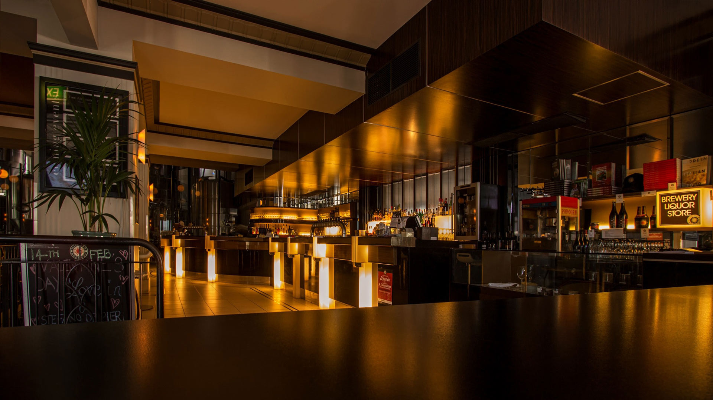

SOBRE
CARDÁPIO
LOCAL
RESERVA
OISHI oferece uma experiência gastronômica única e autêntica. O ambiente é acolhedor e sofisticado, com uma decoração inspirada na cultura e na natureza do Japão. Nossas mesas são de madeira clara e as cadeiras são estofadas em tecido vermelho. Na parede, há quadros de artistas renomados, com pinturas de cerejeiras, montanhas e templos. Não deixando de lado a música suave e relaxante tocando ao fundo, criando uma atmosfera tranquila e agradável.
O OISHI combina tradição e modernidade, qualidade e sabor, conforto e elegância. É o lugar ideal para quem quer desfrutar de uma refeição deliciosa e saudável, em um ambiente aconchegante e refinado. Contamos com uma área reservada para eventos especiais, como aniversários, reuniões ou confraternizações. O espaço é amplo e confortável, com capacidade para até 50 pessoas. Há um telão, um sistema de som e um microfone para apresentações ou discursos. Oferecemos pacotes personalizados de acordo com o número de convidados, o tipo de comida e a ocasião.
Nosso atendimento é cordial e eficiente, com garçons simpáticos, altamente treinados e atenciosos. Eles estão sempre prontos para tirar dúvidas, fazer sugestões e atender aos pedidos dos clientes. O serviço é rápido e preciso, sem demoras ou erros. Os clientes são recebidos com um sorriso e um cumprimento em japonês, e se despedem com um agradecimento e um desejo de volta sempre.
SOBRE
CARDÁPIO
LOCAL
RESERVA